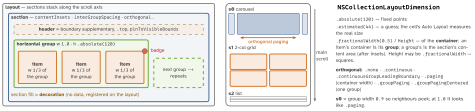
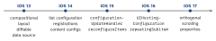

ios-platform · folio
In one line: A compositional layout (iOS 13) is declared, not computed in delegate
callbacks: items sit in groups (the repeating unit), a group repeats
along a section, sections stack into the layout. Every size is
.absolute, .estimated or .fractional of its container.
Cells are dequeued from registrations and rendered from content
configurations (iOS 14).
Download PDF Print view LaTeX source


How it works
- Group —
.horizontal/.vertical(layoutSize:subitems:),repeatingSubitem:count:(iOS 16), groups nest (big tile + 2×2);.customreturns explicit frames.interItemSpacing(.fixed/.flexible) between items only. - Section provider — the closure init
{ index, env in … }builds each section;env.container(effective content size) +env.traitCollectionpick 2 vs 4 columns. Map index → your section viasectionIdentifier(for:)(iOS 15), not raw indices. - List (iOS 14) —
UICollectionLayoutListConfiguration:.plain/.grouped/.insetGrouped/.sidebar,headerMode, swipe-action providers;.list(using:layoutEnvironment:)per section mixes lists with grids — the modernUITableView. - Supplementary — headers/footers = boundary items (
elementKind,alignment,pinToVisibleBounds); badges = item-anchored (containerAnchor); data-backed, viaSupplementaryRegistration. Decoration = visual only, class registered on the layout. - Registration (iOS 14) —
CellRegistration<Cell, Item>+dequeueConfiguredReusableCell(using:for:item:): no string ids, typed item. Create it once. - Content configuration —
defaultContentConfiguration()→UIListContentConfiguration(text,secondaryText,image) →cell.contentConfiguration: a value describes the look, the content view applies it. Custom:UIContentConfiguration(makeContentView(),updated(for:)) + aUIContentView. States:configurationUpdateHandler(iOS 15). SwiftUI:UIHostingConfiguration(iOS 16). - Self-sizing —
.estimatedon both item and group for that axis + a fully constrained cell; estimates near reality or content jumps. - Invalidation — a bounds change re-runs the provider (rotation for free);
invalidateLayout()for other inputs;setCollectionViewLayout(_:animated:)swaps layouts.
Flow layout vs compositional
| flow layout | compositional | |
|---|---|---|
| sizes | delegate sizeForItemAt | declared dimensions |
| a section scrolls sideways | no | orthogonal… |
| table-style lists | no — UITableView | .list(using:) |
| badges, backgrounds | subclass the layout | supplementary · decoration |
| adapt to width | invalidate, recompute | provider gets env |
Example
let layout = UICollectionViewCompositionalLayout { i, env in
if i > 0 { return .list(using: .init(appearance: .insetGrouped),
layoutEnvironment: env) } // a list
let item = NSCollectionLayoutItem(layoutSize: .init(
widthDimension: .fractionalWidth(1),
heightDimension: .fractionalHeight(1))) // fill the group
let group = NSCollectionLayoutGroup.horizontal(layoutSize:
.init(widthDimension: .fractionalWidth(0.9), // peek
heightDimension: .absolute(180)), subitems: [item])
let s = NSCollectionLayoutSection(group: group)
s.orthogonalScrollingBehavior = .groupPagingCentered
return s }
let reg = UICollectionView.CellRegistration< // ONCE
UICollectionViewListCell, Item> { cell, _, item in
var c = cell.defaultContentConfiguration()
c.text = item.title; cell.contentConfiguration = c }Traps
sizeForItemAtdoes nothing — only the flow layout readsUICollectionViewDelegateFlowLayout. The silent migration bug..fractionalHeight(1)on an item = fill the group, not the screen.- Item
contentInsets(shrink each item, gaps double between neighbours) +interItemSpacing= surprise gutters. Pick one; section insets for edges. .estimatedon the item but.absoluteon the group — no self-sizing.- Creating a
CellRegistrationinside the cell provider — re-registers per cell; iOS 15+ raises an exception. - An orthogonal section scrolls in its own internal scroll view —
scrollViewDidScrolldoes not fire; usevisibleItemsInvalidationHandler(per frame: keep it cheap).
Timeline
